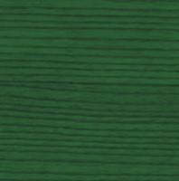

PIXA 3D Configurator :
Frêne tinté :
Frêne tinté - Naturel
Frêne tinté - Noir
 Frêne tinté - Vert
Frêne tinté - ocre
Frêne tinté - washed blue
Peuplier laqué :
Peuplier Laqué - gris
Peuplier Laqué - Vert
Peuplier Laqué - Romarin
Peuplier Laqué - Pêche
Peuplier Laqué - Rouge
Peuplier Laqué - Ocre
Peuplier Laqué - Blueberry
Peuplier Laqué - bleu clair
Peuplier Laqué - bleu
Peuplier Laqué - Blanc